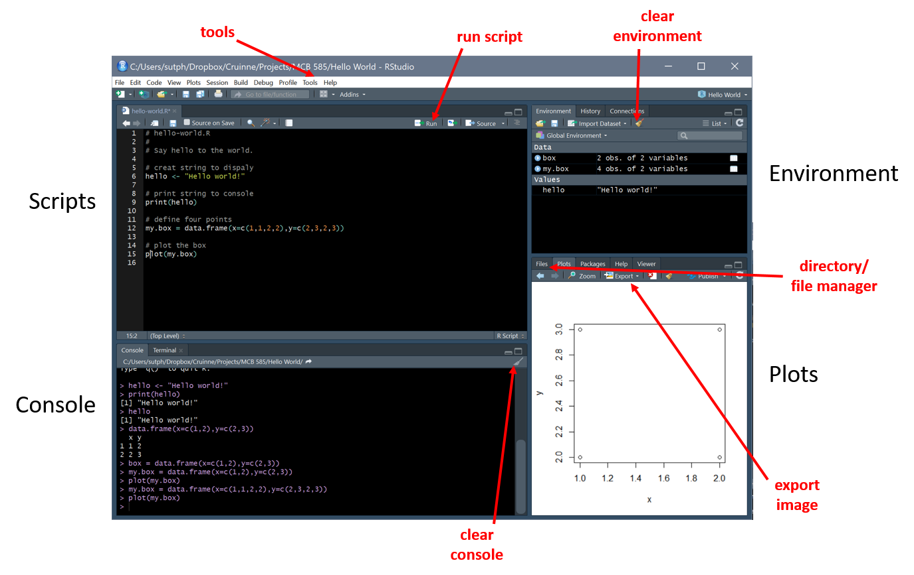

Getting started with R and RStudio
Overview
Class Date: 8/23/2022 -- In Class
Teaching: 90 min
Exercises: 30 minQuestions
What is R? What is RStudio?
How do I use the RStudio graphical user interface?
How do I perform basic calculations in R?
How do I assign values to variables in R?
What are functions, and how are they used in R?
Objectives
Get familiar with RStudio interface.
Understand the difference between scripts and the console.
Understand how to input and read out basic information in R.
Assign values to variables.
Execute functions.
Demonstrate useful shortcuts.
Know when to use
setwd().
In Class
Introduction to R and RStudio
If we only had one data set to analyze, it would probably be faster to load the file into a spreadsheet, calculate some simple statistics, and generate a plot or two.
But what if we have twelve files to analyze in the same way? Or 100? 10,000? What if we are running an analysis that we will be repeating on future datasets?
What is R?
R is a statistical programming language widely used by working scientists that provides a broad spectrum of tools for data manipulation, statistical analysis, machine learning, graphical data representation, and more. R is one of the fastest growing programming languages and new tools are being created all the time.
Advantages of R:
- Versatility – You can do just about anything in the data analysis world.
- Repeatability – Because R is a programming language, a properly designed script can be repeated and automated.
- Community – Because R is widely used, there is a large and active online community producing resources, answering questions, and trying to solve new problems.
Disadvantages of R:
- Learning Curve – R is a programming language. If you don’t have programming experience, it can be a bit daunting to begin using. The major goal of this course is to guide you through the difficult first stage. At the end, we hope that you are familiar enough with the basic workings of R to be comfortable picking it up and try to apply it to new analysis problems in the future.
- Slow for one-time operations – R is great of any analysis that you plan to perform more than once. Other tools are better for quick, one-time projects.
What is RStudio?
RStudio is an integrated development environment (IDE) for R. It basically provides a convenient working environment for writing and employing R scripts. While you can work directly in the IDE provided with R, RStudio has a number of tools that make R easier to learn and interact with. We will be working exclusively in RStudio during this course.
Installing R and RStudio
To participate in both in-class exercises and homework, you will need access to a computer with the current versions of the following installed:
You also need to download some files to follow along with the lessons in class:
- Make a new folder in your Desktop called
MCB585. - Download MCB585-sample-data.zip and move the file to this folder.
- If it’s not unzipped yet, double-click on it to unzip it. You should end up
with a new folder called
data.
Using RStudio
Here are the basic elements of RStudio:

- Code and workflow are more reproducible if we can document everything that we do.
- Our end goal is not just to “do stuff” but to do it in a way that anyone can easily and exactly replicate our workflow and results.
- The best way to achieve this is to write scripts. RStudio provides an environment that allows you to do that.
Interacting with R using RStudio
There are two main ways of interacting with R within RStudio: using the console or using script files (plain text files that contain your code).
Console: The console window (bottom left panel in RStudio) is the place where R is waiting for you to tell it what to do, and where it will show the results of a command. You can type commands directly into the console, but they will be forgotten when you close the session. At some point in your analysis you may want to check the content of variable or the structure of an object, without necessarily keep a record of it in your script. You can type these commands directly in the console.
Script: The script window (top left panel) It is better to enter the commands in the script editor, and save the script. This way, you have a complete record of what you did, you can easily show others how you did it and you can do it again later on if needed. To run commands from script, you can either copy-paste them into the R console, or you can use the script window to ‘send’ the current line or the currently selected text to the R console using the following shortcut:
- iOS/Mac: Ctrl+Return
- Windows: Ctrl+Enter
There are many panels that provide useful information. In general, beyond Script and Console, we will spend time using the following panels:
Environment: The Environment panel (upper-right by default) provides a table with all variables currently loaded into memory, and their value (or variable type for more complex variables). Clicking on a complex variable will load a table in the Script panel showing the structure and values in that variable.
Files: The first tab on the lower-right panel provides a file explorer system that defaults to the working directory of the currently open R project (more on this later).
Plots: By default, any charts or graphics that you produce will be displayed in the Plots panel (second table of the lower-right panel).
Help: The Help tab on the lower-right panel let’s you browse the built-in documentation for R functions. If you request documentation on a function (e.g. ?sum), the help file will appear in this panel.
Quickly switch between panels:
RStudio provides an easy set of keyboard shortcuts for rapidly switching between panels:
- Script – Ctrl+1
- Console – Ctrl+2
- Help – Ctrl+3
- Files – Ctrl+5
- Plot – Ctrl+6
- Environment – Ctrl+8
For a complete list of keyboard shortcuts in RStudio navigate to the following menu:
Tools > Keyboard Shortcuts Help (or use the keyboard shortcut Alt+Shift+K.)
Interacting with the console
If R is ready to accept commands, the R console shows a > prompt. If it receives a command (by typing, copy-pasting or sent from the script editor using Ctrl+Return/Ctrl+Enter) R will try to execute it, and when ready, show the results and come back with a new >-prompt to wait for new commands.
If R is still waiting for you to enter more data because the command you entered is not yet complete, the console will show a + prompt. This means that you haven’t finished entering a complete command, perhaps because you haven’t ‘closed’ a parenthesis or quotation. If you’re in RStudio and this happens, either complete the command and press Enter or click inside the console window and press Esc to cancel the current command. That should help you out of trouble.
Basic commands
At the simplest level, the console can be used as a calculator to directly ask for basic operations. Try a few of the following:
To run the command, try to copy-paste each line into the console and run. Also try copying/typing each line into the script, highlighting the text (or just make sure your cursor is on the right line), and pressing Ctrl+Enter.
# Addition
40+2
[1] 42
# Subtraction
98-56
[1] 42
# Multiplication
6*7
[1] 42
# Division
74088/1764
[1] 42
# Exponential
6.480741^2
[1] 42
# Equations with parenthetical operations
(((6 + 4) + 2)^2 + 9)/3 - 9
[1] 42
Commenting
Note above the use of # signs to add comment. Comments are for you and anyone coming later to read your script. Anything to the right of a # is ignored by R.
# R ignores this part:
# print("Do not print!")
# But runs this part:
print("Print me!")
[1] "Print me!"
Comment liberally in your R scripts. We will discuss best practices in coding and the use of comments more later on in the course.
You can also use commenting in RStudio to build collapsible sections, allowing you to hide a portion of code that you are not currently working on in order to make the rest easier to navigate. To do so, add a comment line with at least four consecutive “-“ (e.g. #----------). RStudio will add a small arrow to your script allowing you to collapse or expand all coding that follows until the next #---- is encountered:
#--------------- Section 1
print("This is section 1.")
#--------------- Section 2
print("This is section 2.")
Note that the actual sections will not appear here after the code is converted to HTML for web publishing, but try pasting the above code into an RStudio script. You can also run a collapsed section of code by selecting the opening line and hitting Ctrl+Enter.
Assigning values to variables
We can create a new variable and assign a value to it using <- or =, which are the assignment operators in R. It assigns values on the right to objects on
the left. So, after executing x <- 3, the value of x is 3. The arrow can
be read as 3 goes into x. You can also use = for assignments but not in
all contexts so it is good practice to use <- for assignments.
In RStudio, the Alt+- will write <- in a single keystroke. Let’s give it a go:
weight_kg <- 55 # using <- sets the value of the variable x to 42.
weight_kg = 55 # using `=` in place of `<-` works in almost all situation (but not quite all; it is better to get into the habit of using `<-`).
Once a variable is created, we can use the variable name to refer to the value it was assigned. The variable name now acts as a tag. Whenever R reads that tag (weight_kg), it substitutes the value (55).

# if you want to see the value of a variable, just type the variable name into the console:
weight_kg
[1] 55
Also note that when you assign a value to a variable, a new object is created in the Environment panel (upper right). This panel lists all objects in your workspace. Note that whenever you make an assignment with <- or =, R creates a new object in memory. Your workspace is simply the collection of objects currently stored in memory that are available to access in your current R session.
Assigning a new value to a variable breaks the connection with the old value; R forgets that number and applies the variable name to the new value.
When you assign a value to a variable, R only stores the value, not the calculation you used to create it. This is an important point if you’re used to the way spreadsheet programs automatically updates linked cells. Let’s look at an example.
First, we’ll convert weight_kg into pounds, and store the new value in the variable weight_lb:
# assign a weight in kg, then use it to calculate the weight in lbs
weight_kg <- 57.5
weight_lb <- 2.2 * weight_kg
# weight in kg...
weight_kg
[1] 57.5
# ...and in pounds
weight_lb
[1] 126.5
We are asking R to look up the value we tagged weight_kg, multiply it by 2.2, and tag the result with the name weight_lb:

If we now change the value of weight_kg:
weight_kg <- 100.0
# weight in kg now...
weight_kg
[1] 100
# ...and weight in pounds is still:
weight_lb
[1] 126.5

Since weight_lb doesn’t “remember” where its value came from, it isn’t automatically updated when weight_kg changes.
This is different from the way spreadsheets work.
Incomplete commands
What happens if you don’t complete a line?
100 +
R hangs with a + in the console, waiting for you to finish your thought…
1
[1] 1
All better.
What is allowed or not allowed with variable names?
Try assigning values to the following variables. Which work and which do not? What is causing the errors?
min_height <- 1
max.height <- 1
_age <- 1
.mass <- 1
MaxLength <- 1
min-length <- 1
2widths <- 1
celsius2kelvin <- 1Solution
min_height <- 1Works!
max.height <- 1Works!
_age <- 1Error: <text>:1:1: unexpected input 1: _ ^Error – variable names cannot start with an “_”.
.mass <- 1No error. However, .mass does not show up as a normal variable because the “.” results in a hidden variable.
MaxLength <- 1Works!
min-length <- 1Error in min - length <- 1: could not find function "-<-"Error – “-“ is an operator (subtraction).
2widths <- 1Error: <text>:1:2: unexpected symbol 1: 2widths ^Error – variable names cannot start with a number.
celsius2kelvin <- 1Works!
Functions in R
Functions are predefined commands that take input values (aka arguments), perform one or more operations, and generate a specific output. The format for using a function is:
output <- functionX(argument1, argument2, ...)
if the output variable and <- are not used, the output is written directly to your console window. Functions carry out a wide range of tasks, and some take no arguments. For example, getwd() will return the path to the current RStudio folder. We will talk more about folders and workspaces below.
getwd()
[1] "C:/Users/sutph/OneDrive/Documents/GitHub/MCB585/_episodes_rmd"
Other functions take many different arguments, separated by ,s, that modify the output. For example, the sum() function will output the sum of all numeric input arguments:
sum(1,2,6)
[1] 9
Functions can also be nested. For example, let’s combine the sum() and sqrt() (short for “square root”) functions to add up the square roots of 4, 9, and 16:
sum(sqrt(4), sqrt(9), sqrt(16))
[1] 9
Many functions take multiple inputs. Let’s take a look at the log() function, which takes two arguments. Take a look at the documentation for log using the ? operator:
?log
More on the help document for each function later, but for now, Under the Usage and Arguments section, this function takes two arguments, the number which we want to take the logarithm of (x) and the base for the logarithm (base). There are three ways to enter this function:
# be explicit about which input is which
log(x = 100, base = 10)
[1] 2
# note that in this case the order does not matter:
log(base = 10, x = 100)
[1] 2
In this case, we told log() exactly which values were assigned to x and base, so the order was unimportant. Here is another option:
# drop the variable names
log(100, 10)
[1] 2
# now the order does matter:
log(10, 100)
[1] 0.5
Looking at Help, x is listed first and base second. If you aren’t explicit, R will assume that you enter arguments define in the documentation. Thus on the first line R took x to be 100 and base to be 10, while on the second line it took x to be 10 and base to be 100. And a final option:
# what if we don't give log() a base argument?
log(100)
[1] 4.60517
Again looking at the Usage section of help, log() uses a default value of exp(1) (which is e or 2.71828). Thus, if you don’t give log() any input for base, it defaults to the natural logarithm. Some functions will have dozens of inputs, but most of them will have a default value. This allows you to use the most common application of a function without having to manually define each input, but gives you the flexibility to change these inputs if you want the function to behave differently.
Working directories in R
Your working directory refers to the file path on your computer where the current session of R will go to look for files. You need to have any external data that you are working with in a file in your working directory in order to load it into R (or know how to specify a different location, if it isn’t in your working directory). Any output (data or charts) that you save in R will also be stored in the working directory by default unless you specify a different location on your computer.
A collection of scripts and data in R are defined as a Project. Among other things, the project will define the default working directory. Let’s try staring a new project:
- In RStudio, click File > New Project….
- Click Existing Directory.
- Click Browse....
- Navigate to your MCB585 folder and click Create Project.
RStudio will reload with a clean working environment. If you click on the Files tab (lower right panel), you will see that the current folder is your MCB585 folder, and that RStudio will have created a new file called MCB585.Rproj.
In the future, you can either just open this file from your file explorer to load you MCB585 project, or you can open it from RStudio by clicking File > Open Project…, navigating to your MCB585 folder, and selecting the MCB585.Rproj file.
You can change the active working directly by using the function setwd(). For example, we can set the working directory to your MCB585/data folder using one of the following commands:
setwd("./data")
setwd("data")
To return the working directory to your MCB585 folder, enter the following command:
setwd("..")
Note that unless you specify the entire path, all entries will be relative to the current working directory. Relative navigation:
- ’.’ = the current working directory
- ’..’ = the directory one level above the working directory (i.e. the Desktop in our case)
- Note that “./data” and “data” both mean “go to the data folder inside the current working directory”
If you are unsure what your current working directory is, you can define the entire path:
setwd("C:/Users/<username>/Desktop/MCB585/data") # Windows
setwd("/Users/<username>/Desktop") # MacOS
Caution for Windows users: If you copy a file path from Windows Explorer and paste it into setwd(), you have to change the backslashes (“\”) used in Windows to forwardslashes (“/”). R interprets “\” as a special type of character called an escape character rather than a part of the string. If you don’t replace them, you will get an error:
setwd(".\data")
Error: '\d' is an unrecognized escape in character string starting "".\d"
We can also ask R what the current working directory is using getwd(), and ask for a list of files in the current directly with list.files():
# Retrieve the current working directory
getwd()
[1] "C:/Users/sutph/OneDrive/Documents/GitHub/MCB585/_episodes_rmd"
# List all files in the current working directory
list.files()
[1] "01-class-introduction.Rmd"
[2] "01-oyo-introduction.Rmd"
[3] "02-class-R-data-types-structures.Rmd"
[4] "02-oyo-R-data-types-in-depth.Rmd"
[5] "03-class-data-frames.Rmd"
[6] "03-oyo-lists.Rmd"
[7] "04-class-manipulating-plotting-data.Rmd"
[8] "04-oyo-advanced-data-manipulation.Rmd"
[9] "05-class-decisions-loops.Rmd"
[10] "05-oyo-more-decisions-loops.Rmd"
[11] "06-class-distributions.Rmd"
[12] "06-oyo-more-distributions.Rmd"
[13] "07-class-hypothesis-testing.Rmd"
[14] "07-oyo-multiple-test-correction.Rmd"
[15] "08-class-survival-analysis.Rmd"
[16] "08-oyo-advanced-survival-analysis.Rmd"
[17] "09-class-power-analysis.Rmd"
[18] "09-oyo-simulation.Rmd"
[19] "99-projects.Rmd"
[20] "data"
[21] "results"
Be careful when using
setwd()One should exercise caution when using
setwd(). Changing directories in the middle of a script file can limit reproducibility:
setwd()will return an error if the directory to which you’re trying to change doesn’t exist or if the user doesn’t have the correct permissions to access that directory. This becomes a problem when sharing scripts between users who have organized their directories differently.- If/when your script terminates with an error, you might leave the user in a different directory than the one they started in, and if they then call the script again, this will cause further problems. If you must use
setwd(), it is best to put it at the top of the script to avoid these problems.The following error message indicates that R has failed to set the working directory you specified (for example, if you misspell the directory name:
setwd("./MispeledDirectory")Error in setwd("./MispeledDirectory"): cannot change working directory
It is best practice to have the user running the script begin in a consistent directory on their machine and then use relative file paths from that directory to access files (see below).
Where to go for additional help
Stuck? The On Your Own section will provide a more extensive list of places where you can look for answers to questions about R and RStudio. For today, we will emphasize two of the most useful ways to find answers.
R documentation
For help with functions, the first place to look is in the R documentation. Use ?<function name> to read the basic instructions for using a function. Try it with a function we have already used, sqrt():
?sqrt # note that you don't include the () after sqrt for help
The documentation gives you a Description of the purpose of the function. Usage tells you the basic information about what arguments the function is expecting, and the Arguments section describes each argument. At the very end, most functions include several Examples demonstrating usage.
Note that if you don’t know the name of a function, you can run a more general search using ??"<search term>":
??"square root"
Unfortunately, this is not a very sophisticated search and often returns many unhelpful results without actually finding the obvious function. Usually I just turn to the next solution:
Google is your friend
There is a vibrant and active R programming community out there. If you have a question, chances are someone has already answered it online somewhere. I have been using R extensively for nearly a decade, and have only twice been unable to find solutions to even obscure and complex problems already published on one forum or another. If you can’t find your answer, feel free to sign up at your favorite forum and post a question. You will often get a useful response within a day or two.
Become adept at using online search engines to locate solutions. I usually start with “r <question>”. Getting the phrasing right can be a bit tricky. Let’s give it a try:
Getting R help online
Use an online search engine (e.g. Google) to find a function that let’s you read data from a text file into R.
Solution
The primary function that you are looking for is
read.table()or possiblyread.delim()(for “tab delimited text file”, which is just a more specific version ofread.table(). Some hits point you toreadtext(), which is a function for reading more complex text files.I used “r read text file” in Google, and received many useful hits Coding forums are one of the best resources, with stackoverflow being my personal favorite. There are also sites like DataCamp that are designed to teach data science and have lots of free material and guides. As you start to ask questions and run searches online, you will get a feel for which sites give you the most consistently useful answers.
Key Points
R is the programming language; RStudio is a user friendly environment for interacting with R.
Using RStudio can make programming in R much more productive.
Consider what working directory you are in when sourcing a script and loading data.
Functions are the basic tool used to manipulate data and other objects in R.
Functions take the form
output <- function(argument1, argument2, ...).Arguments can be passed to functions by matching based on name, by position, or by omitting them (in which case the default value is used).